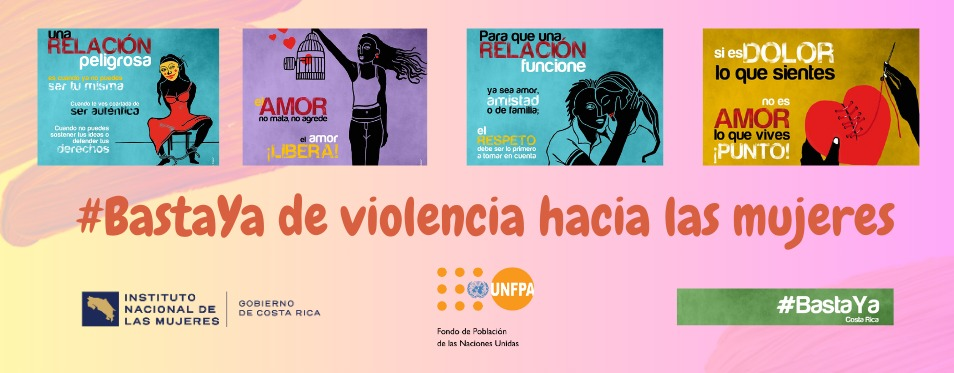
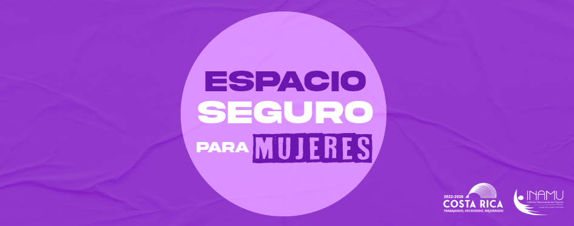
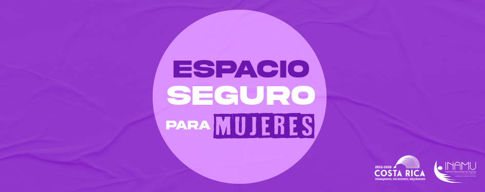
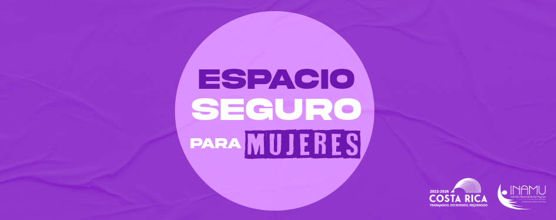
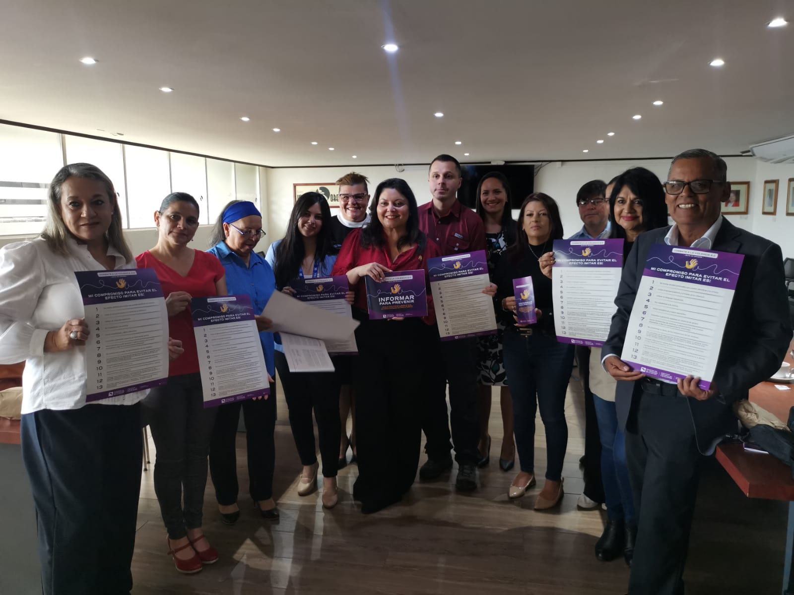

.png)
.png)
.png)
.png)
Instituto Nacional de las Mujeres



 




NosotrasEl INAMU, institución que promueve y tutela los derechos humanos de las mujeres, pone a disposición de la sociedad costarricense y de las mujeres en particular, información acerca de sus áreas de trabajo y los servicios ofrecidos Leer más
|
|
|
La Casa de las Mujeres, es una iniciativa que nace con el objetivo de visibilizar y difundir los aportes de las mujeres al desarrollo de la sociedad costarricense en el campo político, social, cultural, económico y científico. A través de la Casa de las Mujeres, el INAMU invita a todas aquellas personas que quieran conocer y reconocer la contribución de las mujeres al quehacer histórico de Costa Rica, consultando los siguientes links de publicaciones y materiales que... leer mas |


Politicas Nacionales
estas son las Politica Nacionales rectoras de INAMU

PIEG
Responde a los compromisos internacionales sobre derechos humanos y la igualdad efectiva

PLANOVI
La plataforma digital como la herramienta de información y divulgación de acceso a los servicios
NOTICIAS
|

PERIODISTAS SE CAPACITAN SOBRE EL ABORDAJE DE LA NOTICIA VINCULADA CON EL FEMICIDIO PERIODISTAS SE CAPACITAN SOBRE EL ABORDAJE DE LA NOTICIA VINCULADA CON EL FEMICIDIO -- 17 de julio, San José - Esta mañana, un grupo de profesionales de la comunicación recibieron un... |
|
PERIODISTAS SE CAPACITAN SOBRE EL ABORDAJE DE LA NOTICIA VINCULADA CON EL FEMICIDIO PERIODISTAS SE CAPACITAN SOBRE EL ABORDAJE DE LA NOTICIA VINCULADA CON EL FEMICIDIO -- 17 de julio, San José - Esta mañana, un grupo de profesionales de la comunicación recibieron un... |
|
PERIODISTAS SE CAPACITAN SOBRE EL ABORDAJE DE LA NOTICIA VINCULADA CON EL FEMICIDIO PERIODISTAS SE CAPACITAN SOBRE EL ABORDAJE DE LA NOTICIA VINCULADA CON EL FEMICIDIO -- 17 de julio, San José - Esta mañana, un grupo de profesionales de la comunicación recibieron un... |